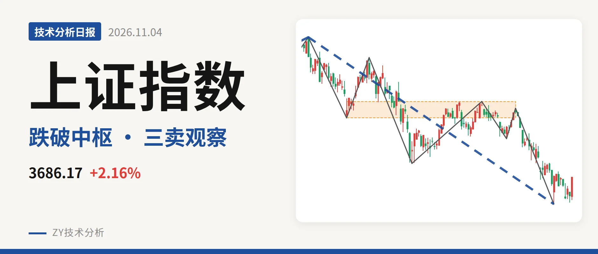
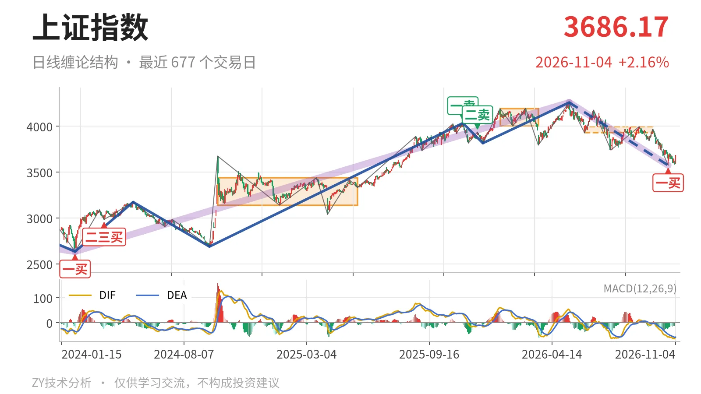
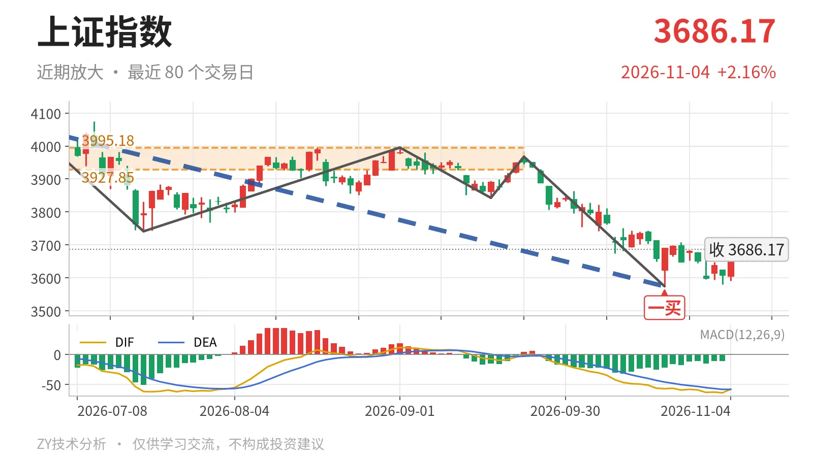

上证指数｜反弹不回3928点，三卖格局待化解

最近日线中枢 3927.85—3995.18点，收盘位于中枢之下
一句话：日线下跌段未完，反弹未回中枢，三卖风险未解除。
🧭 走势结构：日线下跌线段仍在延续
更大级别看，2024年2月5日至2026年5月14日的上涨段没有结束，但5月14日以来的下跌段还在延续。日线线段上，5月14日至10月23日的下跌线段由4258.86点运行至3574.27点，跌16.1%，仍未结束。10月23日形成一笔低点后，10月26日以来只有8根K线反弹，尚未成笔，最高3708.20点，不能改变该线段的下行结构。

📊 中枢与位置：价格在最近中枢下方，中枢下移明确
最近一个日线笔中枢是6月8日至9月22日形成的3927.85—3995.18点，尚未完成。最新收盘3686.17点低于该中枢下沿约6.2%。更早的1月14日至3月23日中枢在4002.78—4190.87点，中枢已经明显下移。今日反弹最高3708.20点，距3928点还有一段距离，仍在下方运行。
🎯 买卖点：10月23日一买触发反弹，但只是笔级别
10月23日形成日线笔一买3574.27点，所在下跌笔9月22日至10月23日已经结束。其后10月26日至11月4日反弹最高3708.20点、最低3580.38点，没有再创新低，一买尚未破坏。不过这个一买属于日线笔级别，上方5月14日以来的下跌线段没有结束，不能当作线段级别反转。

⚡ 力度比较：DIF出现新低不新弱，绿柱面积未确认
关键看9月22日至10月23日下跌笔与6月23日至7月20日下跌笔。6月23日至7月20日绿柱面积289、DIF低点-61.8；9月22日至10月23日绿柱面积347、DIF低点-57.1。价格低点由3741.11点下移至3574.27点，创了回调新低，但DIF低点没有同步创新低，属于“新低不新弱”的DIF背离；绿柱面积反而扩大，面积维度没有背驰确认。最新DIF仍在零轴下方，红柱0.5，反弹只是弱修复。
📐 关键位置观察：3928点、3995点与3574点定结构
反抽若回不到3928点上方，结构上构成三卖，5月14日以来的日线下跌线段延续。重新站上3995点，则6月8日至9月22日中枢更可能只是扩展，下跌转为震荡。若回落再破3574点，10月23日一买被破坏，下方看3313—3419点一带的线段中枢。当前价格仍在最近中枢下方，反弹没能站上3928点，结构偏弱。
⚠️ 本文为基于公开行情数据的缠论技术结构记录，由程序自动计算并生成，仅供学习交流，不构成任何投资建议。市场有风险，投资需谨慎。